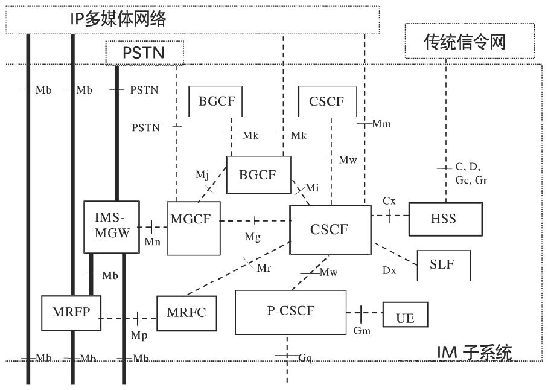
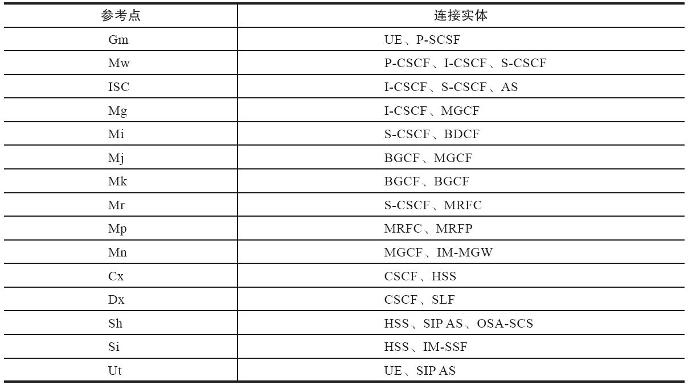

1.8 IMS
IMS [1] 涉及的概念和名词术语相当多，本节将简单加以介绍，对此感兴趣的读者参考，也可以根据这里提到的关键词到网上搜索或查找相关书籍进行更深入的学习。其他读者可跳过本节。
1.8.1 什么是IMS
IMS的全称是IP多媒体子系统（IP Multimedia Subsystem），它是一个基于IP网提供语音及多媒体业务的网络体系架构。它最初是由3G标准化组织3GPP [2] 设计的，作为其GSM之后的未来移动网络远景目标的一部分。IMS的最初的版本（3GPP R5）主要是给出了一种基于GPRS来实现IP多媒体业务的方法。在这个版本的基础上，3GPP、3GPP2以及TISPAN进行了进一步的更新，以支持GPRS之外的（诸如WLAN、CDMA2000和固定等）其他接入网络。从目前来看，IMS是独立于接入网技术的，尽管它与底层传输功能有着很多联系。
从另外一个角度看，IMS实际上是IP网上的一个应用系统。IP网的相关技术标准主要由IETF制定，包括应用层（如Email（POP3、SMTP）、文件传输（FTP）、网页浏览（HTTP）等）的相关协议标准。IETF负责制定了与实时应用（Real-time Applications）相关的协议标准，包括SIP、RTP等。IMS使用的基本都是IETF相关的协议标准（SIP、Diameter等），不同的是，ISM在其基础上又进行了详细的操作性描述和增强，以便提供一种完整的、健壮的多媒体系统。这些操作性描述和增强为运营商控制、分责任、计费和安全提供了支持。
IP多媒体的全套解决方案是由终端、GERAN（GSM EDGE Radio Access Network，GSM/EDGE无线通信网络）或UTRAN（UMTS Terrestrial Radio Access Network，UMTS陆地无线接入网）、GPRS核心网和IP多媒体核心网子系统的一些特殊的功能单元来支持的。这些功能单元包括呼叫会话控制功能（CSCF）、媒体网关控制功能（MGCF）、IP多媒体网关功能（IM-MGW）、多媒体资源功能控制器（MRFC）、多媒体资源功能处理器（MRFP）、签约定位功能（SLF）、出口网关控制功能（BGCF）、应用服务器（AS）、信令网关功能（SGW）等。
IMS网元众多，其核心网络基本架构如图1-12所示。

图1-12 IMS基本架构
1.8.2 IMS的特点
IMS具有以下特点：
·采用SIP作为呼叫控制协议。基于SIP协议实现了呼叫控制和业务控制的分离，并增强了多媒体支持能力。
·支持Diameter协议。Diameter是IETF开发的协议，用于认证、授权和计费（Authen-tication、Authorization、Accouting，AAA）。
·采用归属控制方式。对于移动用户而言，通过归属控制，即使用户漫游到外地，也可以享受到与归属地同样的服务。
·采用接入无关性。提供优越的融合特性，核心功能与具体接入技术无关。
·业务、控制、承载层完全分离。IMS进一步发扬了NGN软交换结构中业务与控制分离、控制与承载分离的思想，与软交换相比其进行了更充分的网络解耦，网络结构更加清晰合理，同时不同类型网络的解耦也为网络在不同层次上的重新聚合创造了条件。这种重新聚合，就是网络新的融合的过程。
·增强计费功能。通过CCF（计费采集功能），可以支持更灵活的在线、离线计费。
·增强多媒体业务。在增强多媒体业务这方面，主要体现在Presence（呈现）、Messaging（短消息）、Conferencing（会议）、PoC（Push-to-talk over Cellular，基于移动网络、采用VoIP技术的集群对讲业务）、MBMS：Multimedia Broadcast Multicast Service（多媒体广播多播服务）等几个方面。
1.8.3 IMS核心网元
IP多媒体子系统像CS域（Circut Switched Domain，用于向用户提供电路型业务连接）、PS域（Packet Switched Domain，用于向用户提供分组型业务的连接）子系统一样，可以完成呼叫的发起、保持、释放等功能。另外，它还要对多媒体进行转换控制以及对多媒体业务提供支持，所以包含更多的功能实体来分别完成不同的功能。
（1）CSCF
CSCF（Call Session Control Function，呼叫会话控制功能）根据在网络中所处的位置的不同，承担的作用也不一样，它可以分为如下三种类型：
·代理CSCF（P-CSCF） ：它是IMS中与用户的第一个连接点，提供Proxy（代理）功能，即接受业务请求并转发它们。P-CSCF在某些情况下也可以提供UA（用户代理）功能。
·问询CSCF（I-CSCF） ：类似IMS的关口节点，分配S-CSCF、路由查询以及IMS域间拓扑隐藏。
·服务CSCF（S-CSCF） ：它在IMS核心网中处理核心控制地位，负责对UE的注册鉴权、会议控制以及用户数据管理等。
（2）MGCF
MGCF（Media Gateway Control Function，媒体网关控制功能）一般用于以下场景：
·控制IMS-MGW中的媒体信道的连接。
·与CSCF通信。
·根据路由号码，为从传统网络来的入局呼叫选择CSCF。
·执行ISUP协议和IMS呼叫控制协议间的转换。
（3）IM-MGW
一个IM-MGW（IP Multimedia-Media Gateway Function，多媒体网关功能）可以终止来自电路交换网的承载信道和来自分组网的媒体流（如IP网中的RTP流）。IM-MGW可以支持媒体转换、承载控制和负荷处理（例如，多媒体信号编解码器、回声消除器、会议桥等）。它包含如下功能：
·通过与MGCF交互来进行资源控制。
·拥有并维护回声消除器等资源。
·可能需要多媒体数字信号编、解码器。
IMS-MGW要提供必要的资源来支持UMTS/GSM媒体传输，还需要对H.248协议进行进一步的调整来支持额外的多媒体数字编、解码器等。
（4）MRF
MRF（Multimedia Resource Function，多媒体资源功能）分成两部分，包括MRFC（Multimedia Resource Function Controller，多媒体资源功能控制器）和MRFP（Multimedia Resource Function Processor，多媒体资源功能处理器）。
·MRFC的主要功能：控制MFP中的媒体流资源；翻译来自AS和S-CSCF的信息（会话标志符等），并相应地对MRFP进行控制；产生计费记录。
·MRFP的主要功能：控制Mb接口点的承载；提供MRFC需要的资源，混合输入媒体流（如用于多方会议），发出多媒体流（如用于多媒体广播），处理多媒体流（如语音编码转换、媒体分析）等。
（5）SLF
在会话建立期间，被I-CSCF查询，SLF（Subscription Locator Function，签约定位功能）向I-CSCF提供存储用户具体数据的HSS的名字；通过Dx接口来接入IMS。在单一的HSS环境中，并不需要SLF。
（6）HSS
HSS（Home Subscriber Server，归属用户服务器功能）是一个数据库实体，它用于在归属网络中保存用户的签约信息，包括基本标志、路由信息及业务签约信息等。HSS中保存的主要信息包括：
·IMS用户标识（包括公有及私有标志）：号码地址信息。
·IMS用户安全上下文：用户网络接入认证密钥信息、漫游限制信息等。
·IMS用户的路由信息：HSS支持用户注册，并且存储用户的位置信息。
·IMS用户的业务签约信息：包括其他AS增值业务数据。
（7）BGCF
BGCF（Breakout Gateway Control Function，出口网关控制功能）用于选择与PSTN（或CS域）接口点相连的网络。如果BGCF发现自己所在的网络与接口点相连，那么BGCF就选择一个MGCF，该MGCF负责与PSTN（或CS域）的交互。如果接口点在另一个网络，那么BGCF就把会话信令转发给另一个网络的BGCF。BGCF在选择与PSTN相连的网络的时候，会利用收到的其他协议的信息和管理信息。BGCF的主要功能如下：
·收到S-CSCF请求后，为呼叫选择一个适当的PSTN（或CS域）接口点。
·选择一个与PSGN（或CS域）相连的网络。如果本网络没有与PSTN相连，那么BGCF就把SIP信令转发给与PSTN（或CS域）相连的网络的BGCF。
·在与PSTN（或CS域）相连的网络中，选择一个MGCF，并把SIP信令转发给MGCF。
·生成计费记录。
（8）SGW
SGW（Singnalling Gateway Function，信令网关功能）完成传输层的信令转换，在基于SS7的信令与基于IP的信令之间转换（也就是在Sigtran SCTP/IP和SS7 MTP之间进行转换）。SGW不对应用层的消息进行解释，但必须对底层的SCCP或SCTP消息进行解释来保证信令的正确路由。
（9）AS
在IMS系统中，实现了业务与控制的完全分离，所有的具体业务都是通过应用服务器（Application Server，AS）来提供的。应用服务器通过一种称为开放服务架构（Open Service Architecture，OSA）的方式引入了Internet上应用的开发模式，为IT应用与电信网的融合奠定了技术基础。AS与CSCF之间使用SIP协议通信。对于不同的服务，AS可以选择不同的SIP模式，如SIP代理模式、SIP用户代理（UA-User agent）模式和SIP B2BUA模式。AS可以设置在IMS本网内，也可以设置在外部的第三方网络中。如果位于本网，它还可以利用Sh或Si接口查询HSS。
一般来说，AS包含以下三类功能与实体：
·SIP AS（Application Server）：基于SIP的应用服务器，负责提供IMS的具体服务。SIP AS和S-CSCF之间直接利用SIP及其扩展的呼叫信令协议，因此不需要进行呼叫信令协议之间的转换工作。另外由于基于SIP可以非常方便地实现语音、数据以及视频等多媒体类的会话，因此SIP AS可以高效率地提供各种新型的融合业务。
·IM-SSF（IP Multimedia Service Switching Function）：IP多媒体交换功能实体，它作为SIP和智能网的CAP（CAMEL [3] Application Part，CAMEL应用部分）之间的接口，为IMS用户提供增值业务。可以位于用户归属网，也可以由第三方提供，主要用于处理IMS发来的SIP会话、发起SIP请求、发送计费信息给CCF和OCS。
·OSA-SCS（Open Service Access-Service Capability Server）：SIP和OSA框架之间的接口。SCS实际上是负责API具体实现的功能实体，它与核心网络元素（如HLR、MSC、SSP等）进行交互。这样，一个SCS服务程序就相当于一个进入核心网络的一个代理或一个网关。
1.8.4 SIP协议的参考点
IMS网络中使用SIP协议的主要参考点如表1-1所示。
表1-1 SIP主要参考点

[1] 参见http://zh.wikipedia.org/zh-cn/IP多媒体子系统。
[2] 第三代合作伙伴计划（3rd Generation Partnership Project）是一个成立于1998年12月的标准化机构。目前其成员包括欧洲的ETSI、日本的ARIB和TTC、中国的CCSA、韩国的TTA和北美洲的ATIS，详见https://zh.wikipedia.org/wiki/3GPP。
[3] Customised Applications for Mobile networks Enhanced Logic，即移动网络定制应用增强逻辑服务器，它扩展了智能网（IN）提供给移动环境的业务范围，使移动网络能更容易地实现基于智能网的增值业务。参考：https://en.wikipedia.org/wiki/CAMEL。